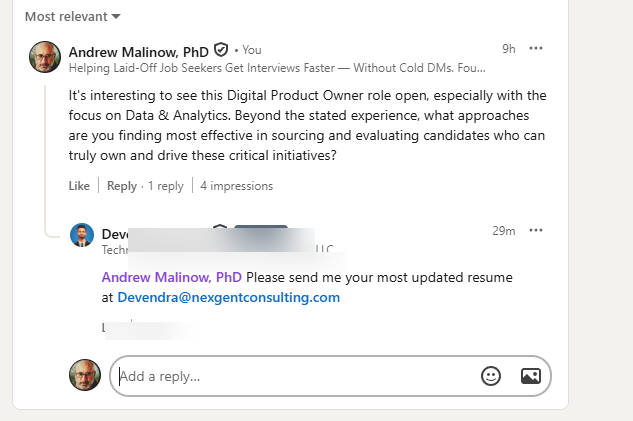

Hiring managers are on LinkedIn right now. Let them notice you.
Junior posts smart comments for you — while you sleep, work, or rest. No writing skills needed.
Words you might not know
- LinkedIn: A website where companies and workers talk.
- Post: A short message someone writes on LinkedIn.
- Comment: A reply you leave under their post. Everyone can see it.
- Hiring manager: A person whose job is to find new workers.
What is LinkedIn?
LinkedIn is like an online breakroom. People who hire hang out there and talk about jobs they need to fill.
- If you just send a resume, you are standing in a long line outside.
- If you talk to them in the breakroom, you get to skip the line.
How to get noticed in 4 steps
What a good comment looks like
"We are hiring forklift drivers in Tulsa. Apply now."
"Great post."
"I have driven a forklift for 5 years at a warehouse. I show up on time. I would like to apply."
How Junior helps you do this
Writing good comments takes time. Junior does it all for you. Junior is fully automated. Once it is set up, you do not have to do anything.
- Junior finds the people who hire.
- Junior reads their posts.
- Junior writes a comment in your voice.
- Junior posts the comment for you. You can sleep, work, or rest.
This is what happens when the right person sees your comment

A real interaction. One smart comment led to a recruiter asking for a resume.
Used by job seekers, salespeople, and recruiters across the US.
Start your free week
Enter your email to begin. It takes less than a minute to set up.
Things people ask
That is fine. Junior writes for you.
Junior runs automatically. Set it once, then forget it.
Most people are. You will learn fast.